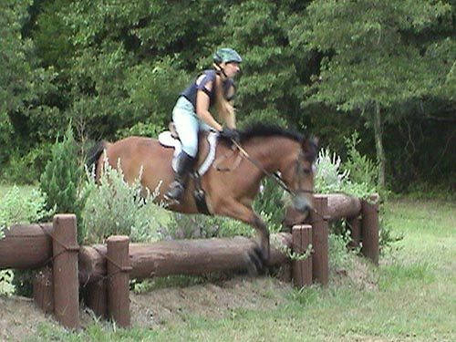
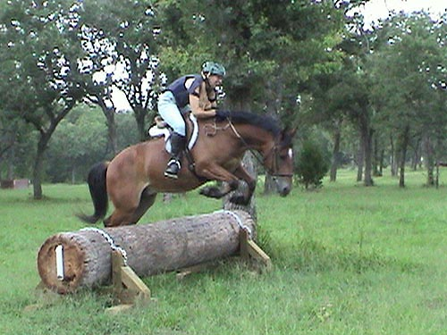
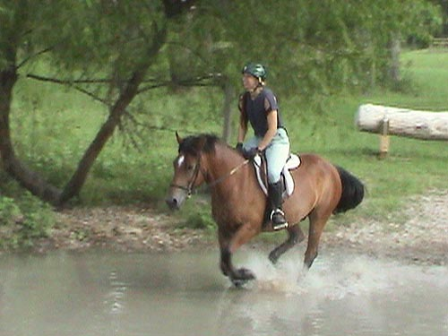
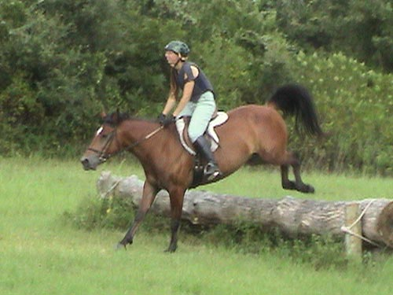
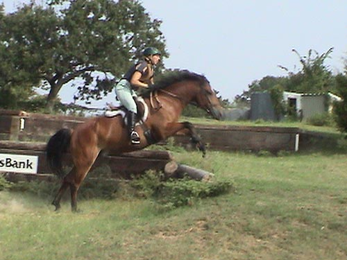

Herbie Schooling
Cross Country We've been having some great weather and
this past weekend
was no exception. Skye got to whip in
out roading, and Herbie
went to Greenwood for some schooling.
We only had trouble at one
jump. He refused a couple of times, then
went over a couple of times.
I think it was asking a bit much, because
it was a couple of strides after
going through the water. I think he focused
on the water, then came out
and said wait a minute, there's not enough
time to think about the jump...
Otherwise, he jumped everything I asked
him to. He went through the water
first try, and we got to play with banks,
which we hadn't done before.
We had a fun time, and I think he developed
a lot more confidence, because
by the last jump he was jumping out of
stride and was very relaxed about it.

Our first jump. It's been a
few months since we've jumped, but he knew what to do.

We tried to get him to be more
scopey. He was getting in a bit closer to the jumps and then really rounding.
I wanted it to be more like a large canter stride.

I think he enjoyed cantering
through the water. When I'd walk him through, he'd take big splashy steps.

After a number of jumps, he
started to smooth out his jumping. He should be ready for a BN event by
next month.

Finally he was seeing that he
could take off a bit long and make it ok. I think a couple more schooling
practices and we'll be ready.